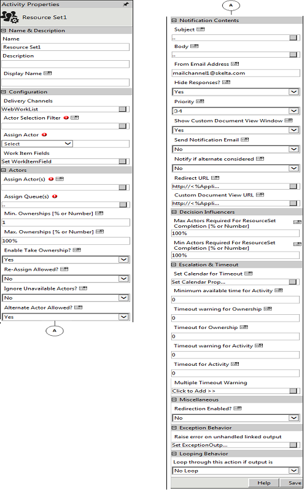

No
Activity Description:
The Resource Set Activity is used in the Workflow Management workflow process design when the actor for executing the subsequent activity needs to be selected by another actor in the previous activity of the workflow. This activity displays a list of actors in the Work items list of the actor who will make the selection.
Application Scenarios:
A typical application scenario could be a Technical Support Request Workflow Process, in which the support request needs to be assigned to the appropriate technical support person for action. The Resource Set activity can be used to allow a supervisor to assign the support request on the basis of some condition.
Variables for Capturing Resource Details:
The details of the resource submitting the ResourceSet response can be accessed
by declaring a variable of type resource with the following syntax:
'^'+Action Name+'RespondingUser'
This variable stores the responded user information. If it is more than one user, it will retrieve the last user details.
Note: For a single user, you can declare this variable as Resource type. If the task is assigned to more than one user and to get all responded users information, then declare this variable as an array.
Variables for assigning queue system variable:
To assign queues instead of setting the queue through Assign Queue property, add a variable with a name prefixed by '^', with the following syntax:
"^"+ CurrentActivity.Name + "_QueueVariable".
For example, if the activity name is 'Approval1' then declare the variable as ^Approval1_QueueVariable in the Start activity with the Type as String. Using the "Update Variable" activity, assign the queue-id (GUID) for this variable in the workflow.
To assign multiple queues, specify the queue-ids with semicolon (;) separator. Skelta.HWS.Queue.QueueCollection class can be used to retrieve queue information.
Variable for Queue Acting Users
You can declare an array type variable to get updated information about the name of the actor to whom an activity gets assigned from a queue.
In the Workflow Variables, define the variable in the following format:
^+CurrentActivityName+'QueueActingUsers'
Ex: ^HRFormQueueActingUsers
HRForm is the activity name.
For example, the value of the user who acts on the HRForm activity will be stored in the variable. The Approval1 task will be assigned to the same user.
Variable for storing timeout warning value
Suppose you want to store the timeout warning value for Task activity in your workflow. The naming convention for the system variable to be declared is
^<ActivityName>ResponseByWarningTimeout
The value returned by the variable will be in UTC format. For multiple user scenarios the highest timeout value calculated for a user will be available in the variable.
Note: Multiple timeout warnings cannot be tracked using this feature.
Variables for capturing Comments
To capture the comments entered by an actor, add a variable with a name prefixed by '^', with the following syntax:
'^'+_WorkItem.HWSActivity.ActivityName+'Comments'
For example, if the activity name is 'ResourceSet1' then declare the variable as ^ ResourceSet1Comments in the Start activity.
Note: By default, the comment field is not available in the "ResourceSet" activity.
To add a comment field to the ResourceSet activity, create a Textbox control named 'txtComment' in the 'ResourceSetUI.html' page which is available under ("[AVEVA Work Tasks Installed Path]\WorkflowElements\Default\en-US\Activities\Activity folder").
Activity Properties:
The Resource Set activity has to be configured by specifying appropriate values for the different properties in the Activity Properties area. The Activity Properties can be accessed by clicking on the Activity Properties tool in the Tool Bar or by selecting the appropriate option from the right-click menu for the Resource Set activity. The Activity Properties are organized under the following groups of related properties. The properties under each group are described in this topic.

Name & Description
The properties in the Name & Description group have been described below. You can use these properties to specify the name and description for the activity.
Name - This property can be used to specify a name for the activity.
Property Type: Optional (This property needs to be set only if necessary.)
Description - This property specifies a brief description to be displayed for the activity.
Property Type: Optional (This property needs to be set only if necessary.)
Display Name - This property specifies the name to be displayed for the activity in the Work items list.
Property Type: Optional (This property need not be set if the display name is already configured in the Actions.xml. The name entered here overrides any display name that is configured for this activity in the Actions.xml file.)
Configuration
The properties in the Configuration group have been described below. You can use these properties to configure the functionality of the activity.
Delivery Channels - This property is used to specify the delivery channels to deliver this activity to the assigned actor(s). Multiple channels can be specified giving the actor(s) different options to act on the work item.
Property Type: Optional (This property needs to be set only if necessary.)
Steps to set the Delivery Channels property
See Approval Activity for a detailed description of the Delivery Channels property window.
Actor Selection Filter - You can define the list of actors who will be available to the user acting on the Resource Set activity using the Actor Selection Filter. The output of the Resource Set activity is the actor(s) set by the user who acts on the Resource Set activity. The actor receives the list of available actors as input through the Assign Actor drop-down.
Property Type: Mandatory (This property must be set for the activity to be used in the workflow.)
Steps to set the Actor Selection Filter property
See ResourceSet - Subject for a detailed description of the Actor Selection Filter property window.
See the Using XML Variables section in the Approval Activity topic for details on how to use the XMLVariables to build the expression.
Assign Actor - This property allows you to select the workflow variable to which the actor will be set by the actor acting on the Resource Set. The variables will have to be created in the properties for the Start activity. The variables can be one of the three types - String, Array or Resource. String variables take one UserID at a time, while Arrays take in a number of UserIDs pointing to different actors. Resource variables will take the complete resource properties. In a group action scenario, where more than one actor acts on the Resource Set activity, the selection of the last actor to act will be assigned to the variable.
Property Type: Mandatory (This property must be set for the activity to be used in the workflow.)
Work Item Fields - This property is used to add the Work Item Fields to be used to display application data as well as value in variables and content in the Work items list when this activity is executed.
Property Type: Optional (This property needs to be set only if necessary.)
Steps to set the Work Item Fields property
See ResourceSet - Work Item Fields for a detailed description of the Work Item Fields property window.
Actors
The properties in the Actors group have been described below. You can use these properties to specify the actors who will work on the activity and related properties.
Assign Actor(s) - This property specifies the actor(s) who has to take up the Resource Set activity. It is tagged with the Ignore Unavailable Resources property which in turn is tagged with Alternate Resource Allowed. This will be explained in detail later.
Property Type: Mandatory (This property must be set if the activity is to be assigned to any actor(s).)
Steps to set the Assign Actor(s) property
See ResourceSet - Subject for a detailed description of the Assign Actor(s) property window.
See the Using XML Variables section in the About the XML Variable User Interface topic for details on how to use the XMLVariables to build the expression.
Assign Queue(s) - This property specifies the queue(s) to which the Resource Set activity is to be assigned.
Property Type: Mandatory (This property must be set if the activity is to be assigned to any Queue(s).)
Steps to set the Assign Queue(s) property
See ResourceSet - Subject for a detailed description of the Assign Queue(s) property window.
Min. Ownerships [% or Number] - This property, which can be specified as a number or percentage, is the minimum number of actors who should take ownership of the Resource Set request. This property is related to the 'Timeout warning for Ownership' and 'Timeout for Ownership' properties. To illustrate, when 'Timeout for Ownership' is reached, the activity first checks if the ownership count is less than Min.Ownerships (if it is set). If it is, the work item will be removed from all Work items lists. If the 'Min.Ownerships' has already been satisfied, then the work item will be removed from the Work items lists of those who have not taken ownership. If the Min.Ownerships value is 0, then the activity checks if the ownership count is less than Max.Ownerships (if it is set). If it is, the work item will be removed from all Work items lists. Else the work item will be removed from the Work items lists of those who have not taken ownership. If both Min.Ownerships and Max.Ownerships are set to 0, then there should be at least one actor taking ownership within the set time, otherwise the work item will be removed from all Work items lists.
Property Type: Optional (This property needs to be set only if necessary. It is useful in group response scenarios.)
Max. Ownerships [% or Number] - This property, which can be specified as a number or percentage, is the maximum number of actors who should take ownership of the Resource Set request. If 'Timeout for Ownership' is specified and achieved, and the 'Min.Ownerships' is also satisfied, then the activity waits for action from those who have taken ownership. If the Min.Ownerships value is set to 0, then it checks if the ownership count is less than Max.Ownerships. If it is, the work item will be removed from all Work items lists. Else the work item will be removed from the Work items lists of those who have not taken ownership. If both Min.Ownerships and Max.Ownerships are set to 0, then there should be at least one actor taking ownership within the set time, otherwise the work item will be removed from all Work items lists.
Property Type: Optional (This property needs to be set only if necessary. It is useful in group response scenarios.)
Enable Take Ownership? - If this property is set to Yes, then the actor is provided with a Take Ownership option in the Work items list to take ownership of the task. If you are not required Take Ownership option in the Work items list, then set this property as No.
Note: By default, this property is set as Yes.
Property Type: Optional (This property needs to be set only if necessary.)
Steps to set the Enable Take Ownership? property
Re-Assign Allowed? - If this property is set then the resource is provided with a Re-Assign option. Using this the actor can forward the work item to another actor.
Property Type: Optional (This property needs to be set only if necessary.)
Ignore Unavailable Actors? - This property provides the following options - Yes, Yes - holidays excluded and No. If this property is set to 'No', when the Approval activity is assigned to the actor's Work items list, a check is first done to see whether the actor is available. If the actor is not available then a check is made for an alternate actor assigned to the unavailable actor. Simultaneously, the value of the property 'Alternate Actor Allowed' is checked. If that is also set, then the Approval work item is assigned to this actor. If this property is set to Yes - holidays excluded, the workflow engine will ignore the fact that actors are not available if the day is an organization holiday and the output Not Enough Resources will not be generated.
Property Type: Optional (This property needs to be set only if necessary.)
Alternate Actor Allowed? - This property is set to assign a particular task to an alternate actor in the absence or unavailability of any actor.
Property Type: Optional (This property needs to be set only if necessary.)
Notification Contents
The properties in the Notification Contents group have been described below. You can use these properties to specify the content used to notify actors about the activity.
Subject - This is the subject of the Resource Set assignment. The subject can be customized for each actor.
Property Type: Optional (This property need not be set. If it is not set, the default subject line from the Actions.xml file is displayed.)
Steps to set the Subject property
See ResourceSet - Subject for a detailed description of the Subject property window.
Body - This is the actual message of the Resource Set sent to the actor(s). The body can be customized for each actor. There is an Enterprise Console Explorer(plug-in) icon in the Body property window to get the work item details URL. See Enterprise Console Control (EC Plug-in) for more information.
Property Type: Optional (This property need not be set.)
Steps to set the Body property
See ResourceSet - Body for a detailed description of the Body property window.
From Email Address? - This property is used to specify the email address from which notification messages will be sent for the activity.
Property Type: Optional (This property needs to be set only if necessary. If it is not set, the default value in Activities.xml will be used.)
Hide Responses? - If this property is set to 'No', then actors can see the responses of other actors in a group Resource Set scenario. To view these responses i.e., ownerships, Resource Sets etc., select the 'Take Ownership' option. This will open a new pop up with the responses of other actors who have taken ownership.
Property Type: Optional (This property needs to be set only if necessary. It is useful in group response scenarios.)
Priority - This property is set to indicate the priority of the Resource Set request. Enter the values 0-33 to set as Low, 34-66 for Medium, or 67-99 for High. The default value is set to 34.
Property Type: Optional (This property needs to be set only if necessary.)
Show Custom Document View Window - If this property is set to 'Yes', then the Custom Document View Window will be shown to actors in their Work items lists.
Property Type: Optional (This property needs to be set only if necessary.)
Send Notification Email - If this property is set to 'Yes', then notification emails will be sent to the actors. If it is set to 'Yes-HTML', then the emails will be sent in HTML format.
Property Type: Optional (This property needs to be set only if necessary.)
Notify if alternate actor is considered - If this property is set to 'Yes', then notification emails will be sent to the actors when an alternate actor is considered.
Property Type: Optional (This property needs to be set only if necessary.)
Redirect URL - This property is used to get the URL of the web page to redirect the client to, in the case of synchronous execution of the activity.
Property Type: Optional (This property needs to be set only if necessary.)
Steps to set the Redirect URL property
See ResourceSet - Redirect URL for a detailed description of the Redirect URL property window.
Custom Document View URL - This property is used to get the URL of the page to which the custom document dlls does a post. The data posted to the page are application, workflow, executionid, executiondetailsid, and workitemid. The posted data can be retrieved as Request.Form ["workitemid"].
Property Type: Optional (This property needs to be set only if necessary.)
Steps to set the Custom Document View URL property
See ResourceSet - Custom Document View URL for a detailed description of the Custom Document View URL property window.
Decision Influencers
The properties in the Decision Influencers group have been described below. You can use these properties to specify some parameters that influence the outcome of the activity.
Max Actors Required For ResourceSet Completion [% or Number] - This property is used to check what percentage or number of actors should take action for Resource Set. Decision on the Resource Set is taken only after the specified number or percentage of actor(s) have taken the action. The activity waits for the actors' action until the 'Timeout for activity' is reached.
Property Type: Optional (This property needs to be set only if necessary. It is useful in group response scenarios.)
Min Actors Required For ResourceSet Completion [% or Number] - This property specifies the minimum number of actors to act on the Resource Set before the 'Timeout Warning for Activity'. If the activity limit is reached before the 'Timeout Warning for Activity' then the warning message is not shown.
Property Type: Optional (This property needs to be set only if necessary. It is useful in group response scenarios.)
Escalation & Timeout
The properties in the Escalation & Timeout group have been described below. You can use these properties to specify escalation and timeout settings for the activity.
Set Calendar for Timeout - This property is used to specify the calendar to be used to determine activity timeouts.
Property Type: Optional (This property needs to be set only if necessary.)
Steps to Set Calendar for Timeout
See ResourceSet - Set Calendar for Timeout for Timeout for a detailed description of the Set Calendar for Timeout property window.
Minimum available time for Activity - This property is used to check the availability of an actor to whom a task must be assigned while executing the activity. The availability check for the actor is done based on the Calendar settings (Global or Resource Calendar). If the time taken to complete the task is within the value set for the Minimum available time for Activity property, then the task will be assigned to that actor. However, if the time taken to complete the task exceeds the value set for the Minimum available time for Activity property, then the task will be assigned based on the values set for the Ignore Unavailable Actors? and Alternate Actor Allowed? properties.
Property Type: Optional (This property needs to be set only if necessary.)
Timeout warning for Ownership - This property specifies the time at which a warning is provided to an actor to take ownership of the work item assigned to him/her. If the actor does not take ownership within this time, the engine is notified with a warning. Thus if 'Min.Ownerships' is set, and it is not satisfied before the given time then a warning is sent. If Min.Ownerships is 0, it will check for Max.Ownerships. If the ownership count does not reach the Max.Ownerships value within the set time, a warning is sent. If both Min.Ownerships and Max.Ownerships are not set, this property is ignored.
Property Type: Optional (This property needs to be set only if necessary.)
Understand how Ownership Properties relate to each other:
Timeout for Ownership - This property specifies the time until which actors are allowed to take ownership, i.e. the time until which the Resource Set action will wait for actors to take ownership. If Min.Ownerships is set and is not reached, the work item is removed from all Work items lists. If Min.Ownerships is 0, it will check if ownership count is less than Max.Ownerships. If it is, the work item is removed from all Work items lists. Else the work item will be removed from the Work items lists of those who have not taken ownership. The work item will remain in the Work items list of those who have taken ownership and wait for action from them.
Property Type: Optional (This property needs to be set only if necessary.)
Timeout warning for Activity - This property specifies when a reminder has to be provided for the actors to act on the Resource Set request, if the action count has not been reached. If properties such as Max.Ownerships, Affirmative Action for Resource Set (AAA), and Action Limit (AL) are set, once the property values are reached then a warning is sent to the actor. When the timeout is reached, the following checks are made: If AL is set, when the action count i.e. the no. of Resource Sets (AC) < AL, then a warning is sent. If AL = 0 and AAA is set, and when AC < AAA, then a warning is sent to the actor.
Property Type: Optional (This property needs to be set only if necessary. It is useful in setting escalations.)
Timeout for Activity - This property's value is used to decide until what time the activity should wait for the actors' action. If properties such as Max.Ownerships, AAA, AL are set, once the property values are reached the work item is removed from the Work Item lists of all the actors. When the timeout is reached, the following checks are made: If AL is set, when the action count i.e. the no. of Resource Sets or rejections (AC) < AL, then the timeout for action is performed and the work item is removed from all Work items lists. If AC > AL, it checks with the no. of Resource Sets or 'decision count' (DC) and AAA. If DC >= AAA (if it is set), the action is considered completed. If AAA = 0 and if DC >= AL, the action is considered completed. If AL = 0 and AC < AAA, then the timeout for action is performed and the activity is removed from all activity lists. If AL = 0 and AC > AAA, it will check with DC. If DC > AAA it is completed. If AL = 0 and AAA = 0, then if DC is at least 1, then it is considered completed.
Property Type: Optional (This property needs to be set only if necessary. It is useful in setting escalations.)
Multiple Timeout Warning - This is used to set recurring timeout warnings that will be sent to the actors who have to take action. To set multiple timeout warnings, click the 'Multiple TimeOut Warning' button in the Properties pane for the Resource Set activity. A new window pops up. In this window, set the interval for the recurring warning as well as the output message. You can also set the Recurring Time Interval. This can be used to set a different recurring time out after the first timeout happens. For example, if 'Time Interval' for the property is set as 7 days and 'Recurring Time Interval' is set as 2 days, then the first time out will happen after 7 days and there will be a recurring time out every second day after the seventh day (first) time out.
Property Type: Optional (This property needs to be set only if necessary. It is useful in setting escalations.)
Steps to set the Multiple TimeOut warning property
See ResourceSet - Multiple TimeOut Warning for a detailed description of the Multiple TimeOut Warning property window.
Looping Behavior
The property in the Looping Behavior group has been described below. You can use this property to specify the looping behavior of the activity.
Loop through this action if output is - This property is used to specify the condition for looping the activity by selecting an activity output from the drop down.
Property Type: Optional (This property needs to be set only if necessary.)
Redirection Enabled? - This property enables redirection. When this property is set to Yes, the workflow redirects the user to the URL in the Redirect URL property in the next activity.
Activity Outputs:
The Resource Set Activity returns the following values -
Action Completed: Displayed when all the actors have taken part.
Action Completed - Affirmative Percentage Not Reached: Displayed when all the actors have not taken part.
Not Enough Resources to Take Acknowledge: Displayed when the filter condition did not yield enough actors to whom the request can be sent.
Timeout - Acknowledge: Displayed when the specified minimum number of actors did not take ownership of the request in the given time.
Timeout - Action: Displayed when some or all of the specified actors did not perform the required action in the given time.
Timeout Warning - Acknowledge: Displayed when a warning is generated that the specified minimum actors have not taken ownership of the request in the given time.
Timeout Warning - Action: Displayed when a warning for timeout is generated because some or all the actors did not perform the required action in the given time.
Note: The following outputs will return only if user assigned tasks to a queue user.
Resource Unavailable for Queue - If a queue is assigned to a task & if there are no resources available in the queue then this output will get triggered.
TimeOut for Queue Task - This output will get triggered when the task in the queue is not picked by any users within the queue escalation time resulting the completion of that task.
Timeout Warning -Queue - This output will get triggered when the task in the queue is not picked by any users within the queue escalation time resulting in sending a warning out put. However, the task will still be sleeping.
Timeout Warning -Queue Participant - This output will get triggered when the task in the queue is picked by user but still not acted on that task within the queue escalation time out settings resulting in triggering a warning output. However, the task will still be sleeping.
Exception Behavior
Each activity has the Raise Error on Unhandled Linked Output property on click of which, it shows all the default configured mapped error outputs in red with their check boxes selected.
See Mapped Error Outputs for more details.